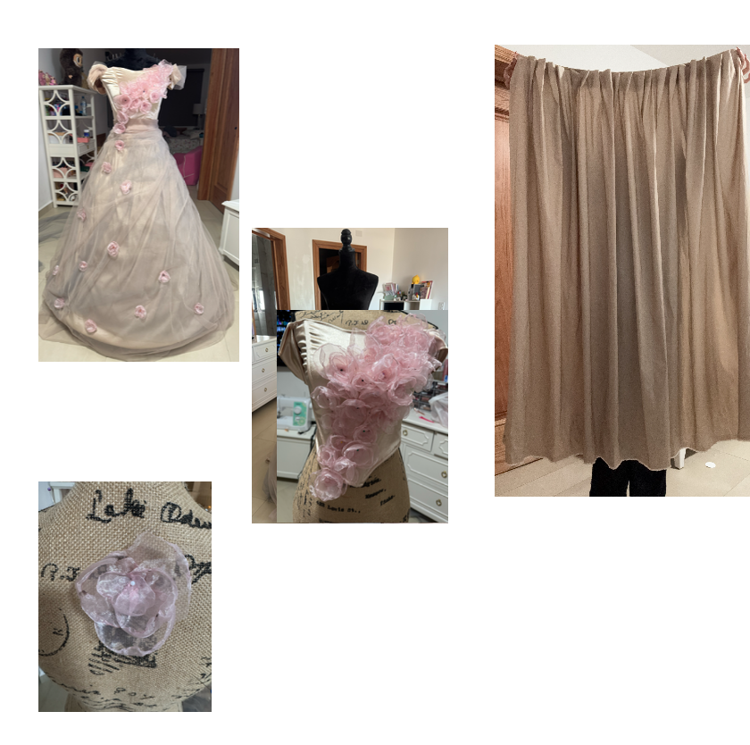
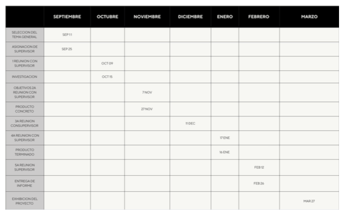
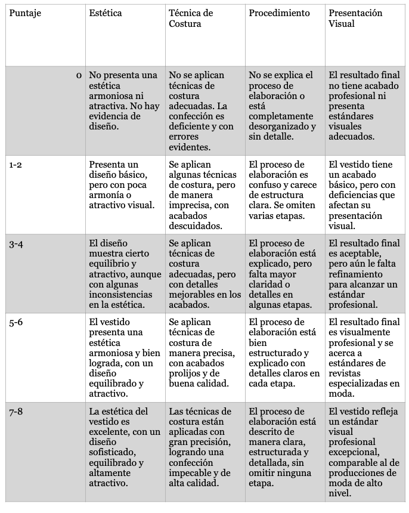

El objetivo de aprendizaje es aprender más sobre el diseño y la confección de ropa, explorando técnicas de costura, patronaje y estilismo. Este interés surgió de mi fascinación por la moda y su impacto en la expresión personal.
El producto final es un vestido inspirado en la Met Gala, que refleja la creatividad y el impacto visual característico del evento. Se establecieron criterios de éxito basados en la estética, técnica de costura, procedimiento y presentación visual.
Se elaboró un cronograma detallado que incluyó la selección del tema, investigación, diseño y confección del vestido. Cada etapa fue documentada en un diario de proceso para asegurar un seguimiento preciso.
Se realizó una investigación exhaustiva sobre la historia de la Met Gala, diseñadores icónicos y técnicas de confección. Se utilizó el enfoque CRAAP para evaluar la calidad de las fuentes.
Se diseñó un cronograma detallado para organizar el tiempo y las tareas. Se mantuvo un registro en el diario de proceso para documentar cada avance y ajuste en el proyecto.
Este es el cronograma detallado que se utilizó para organizar el tiempo y las tareas del proyecto.
Ver másEl proyecto me permitió comprender la importancia de la moda como una forma de expresión artística y cultural. Aprendí la relevancia de la planificación y la organización en el desarrollo de un proyecto.
El vestido final cumplió con los criterios de éxito establecidos, aunque se realizaron ajustes en los materiales y la estructura durante el proceso. La retroalimentación recibida fue positiva, confirmando que el producto logró transmitir el concepto deseado.
| # | Criterio | Evaluación | Comentarios |
|---|---|---|---|
| 1 | Estética | Excelente | El diseño fue muy bien recibido. |
| 2 | Técnica de costura | Buena | Se notaron algunos detalles menores. |
| 3 | Presentación visual | Excelente | La presentación fue impactante. |